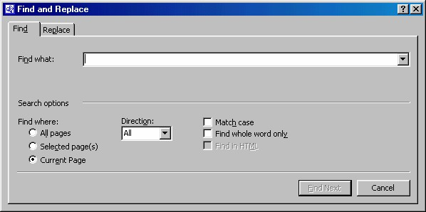
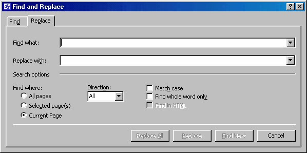

4. Mencari dan mengganti
FrontPage berisi beberapa tool yang mungkin sudah Anda kenal sebelumnya pada
program pengolah kata, walaupun agak sedikit berbeda.
Dengan kotak dialog pencarian ini, Anda dapat mencari kata atau frasa tertentu,
mencari sebuah kata lalu menggantinya, atau memeriksa ejaan.
4.1 Mencari Teks
Jika Anda ingin mencari sebuah kata atau frasa pada halaman yang sedang Anda
lihat pada ForntPage, aktifkan perintah Edit _ Find. Anda akan melihat kotak
dialog Find and Replace yang mirip dengan yang biasa digunakan pada program
pengolah kata, jadi semestinya Anda tidak asing lagi untuk menggunakannya.

Gambar 5.12 Kotak dialog Find
• Kemudian tuliskan teks yang ingin Anda cari pada kotak isian Find What.
• Kelompok Find where, bisa digunakan untuk menentukan lingkup
pencarian, antara lain All pages (seluruh halaman), Selected page(s)
(halaman terpilih saja) dan Current Page (halaman yang sedang aktif).
Mungkin Anda ingin mencari teks tertentu tetapi tidak ingat di folder mana
Anda menyimpannya. Dalam hal seperti ini, aktifkan pilihan All pages yaitu
mencari ke seluruh halaman di web.
• Pilihan Find Whole Word Only untuk membatasi pencarian hanya untuk
kata itu. Misalnya, kalau Anda mencari kata temu dan tidak mengaktifkan
pilihan ini, maka FrontPage akan menampilkan kata pertemuan, ketemu,
ditemukan, temuan dan sebagainya yang mengandung kata temu. Namun
kalau Anda mengaktifkan pilihan tersebut, maka FrontPage hanya akan
mencari kata temu.
• Pilihan Match Case untuk membatasi pencarian agar sesuai dengan
pemakaian huruf kapital.
• Anda bisa menentukan ar
ah pencarian dengan daftar Direction, pilihan Up
akan mencari dari lokasi kursor ke atas. Dan pilihan Down, sebaliknya, akan
mencari dari kursor ke bawah.
Kemudian klik tombol Find Next, FrontPage akan melakukan pencarian kata yang
Anda inginkan.
4.2 Mengganti Teks
Untuk mengganti teks, cara yang dipakai masih sama seperti pencarian teks. Anda
hanya perlu klik tab Replace pada kotak dialog Find and Replace , seperti Gambar
5.13.

Gambar 5.13 Tab Replace
Setelah kotak dialog terbuka tuliskan teks yang Anda cari pada kotak isian Find
what, misalnya photo. Dan teks penggantinya pada kotak isian Replace with,
misalnya foto.
Anda juga bisa mengaktifkan beberapa pilihan untuk pembatas pencarian, seperti
pembahasan pada Find.
Setelah melakukan pengaturan untuk penggantian teks , Kemudian klik tombol OK
atau Find Next.
4.3 Yang harus diperhatikan
Berhati-hatilah kalau mengganti teks. Apabila Anda mengganti teks yang memiliki
hyperlink, hypelink tersebut akan dihapus. Selain itu, fasilitas Find, Replace, dan
Spell Check hanya bekerja pada teks yang dapat dilihat halaman saja.
Fasilitas ini tidak mencakup teks pada judul halaman, komentar, dan URL yang
digunakan di link, dan sebagainya.
Sebagai pedoman, berhati-hatilah dalam menggunakan tombol Replace All pada
kotak dialog Find and Replace , karena ada kemungkinan merusak link tanpa Anda
sadari.
Copyright © Herlan Lesmana
Created with the Freeware Edition of HelpNDoc: Free Web Help generator